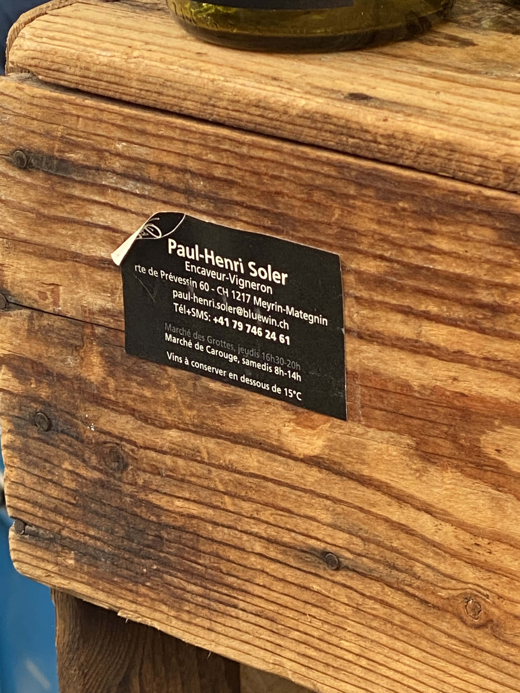

Carouge · Geneva · Switzerland
Saturday at the Marché de Carouge
The best wine in Geneva, sold from a wooden barrel on Saturday mornings
The Saturday market in Carouge is a wonderful way to spend your early afternoon. Like all farmers markets, the shopping is more performative, experiential, than pragmatic — you still need to go to Coop and get real stuff. But there is one thing worth making the trip for that you genuinely cannot get anywhere else, and that is Paul-Henri Soler's wine.
The market itself is worth the visit regardless. It spills across the Place du Marché in front of the Carouge Cinéma, which has one of the best walls in Geneva. In summer someone usually sets up playing violin between the stalls. The neighbourhood is Italian-inflected, arcaded, completely unlike the rest of the city — it's what Geneva would be if it relaxed a bit.

Paul-Henri is a French guy who married a Swiss woman and set up a small operation near the Geneva airport. He sources grapes exclusively from the Geneva region — local varieties, local terroir — and makes everything himself with a sensibility that sits somewhere between natural wine and actual wizardry. Think of him as a French Willy Wonka who decided to get into wine instead.
He is not a large producer. The range changes seasonally, the labels are hand-illustrated in a scratchy bike-riding figure that shows up on everything, and whatever he is selling this week will be good. All the wine obsessives in Geneva — and there are many, this is still Switzerland — quietly revere him. If you're ever at Bombar and you mention Paul-Henri, you will pass the cool test and be greeted accordingly.
"Say his name at Bombar and you will pass the cool test."

There's a wine he makes called Biceps. It's a maceration wine — technically somewhere between white and red, what people call orange wine — but the way to think about it is: a light red you put in the fridge. Drinking temperature, easy, completely sessionable. I have opened a bottle to have a glass and then proceeded to finish the entire thing without noticing.
The colours of his wines are beautiful. The Biceps in particular goes this extraordinary amber-copper colour when you hold it up to the light. Buy one to drink now and one to take home.

He'll happily let you taste everything before buying — that's part of the ritual. On a good Saturday you can stand there and work through four or five wines. There are wooden barrel tables set up where you can sit with a glass if it's a nice day, which in Carouge in the summer, it often is. Or you stock up for the house, which is what I try to do whenever I have the chance. CHF 16–19 a bottle for wine this good is not something you take for granted in Switzerland.
I can promise you with no hesitation that you will like the wine. It's a good vibe all around — one of those genuinely unique Geneva things that you won't find anywhere else and that locals know is special.
"CHF 16–19 a bottle for wine this good is not something you take for granted in Switzerland."


One note: the indoor cellar photos in this tip are from his operation near Meyrin, not the Carouge market itself. If you want to buy a case or visit the source, that's where to go. But for most purposes, the Saturday stall is perfect. Get there before noon — he does sell out of certain bottles by early afternoon on busy weekends.
